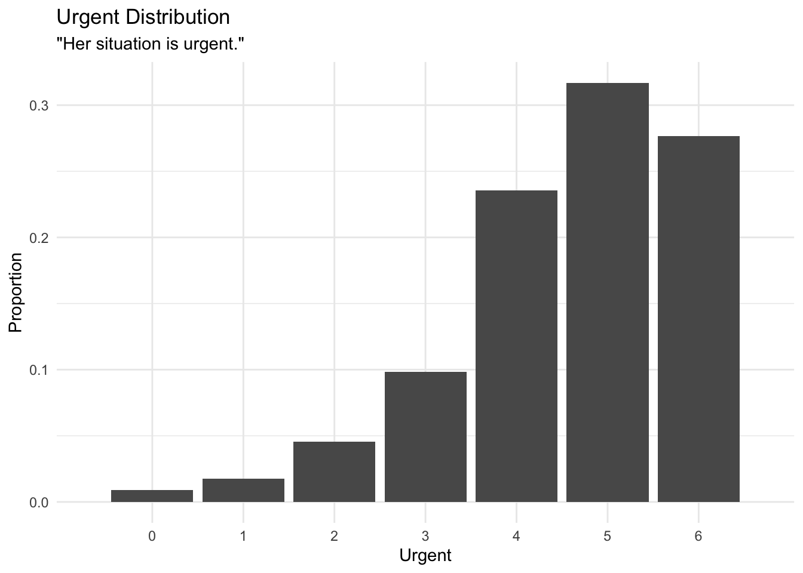
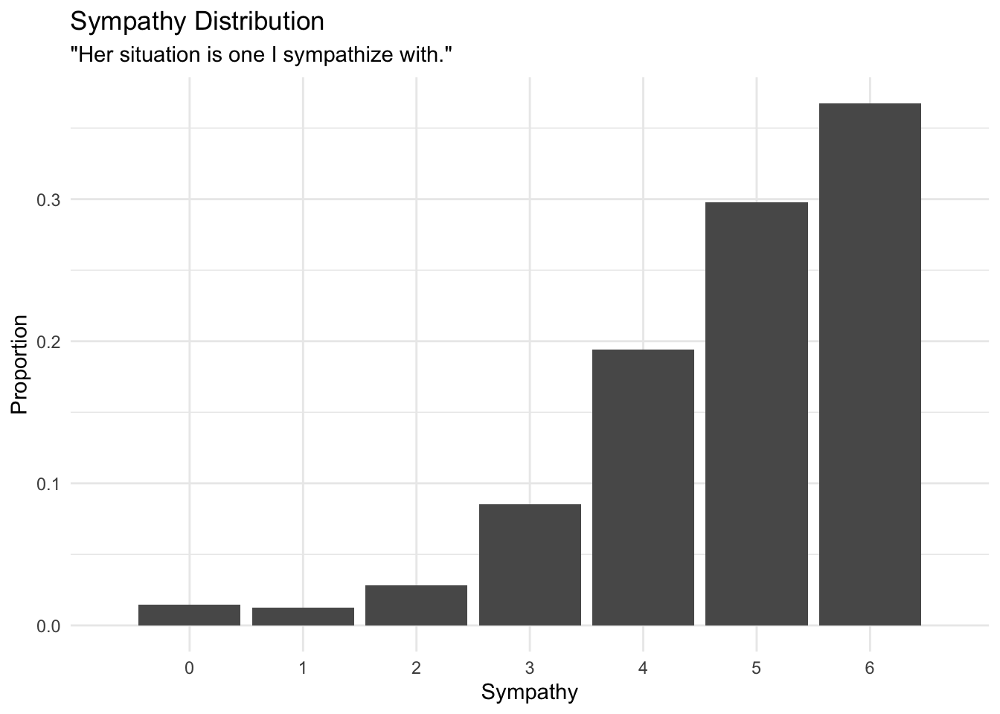
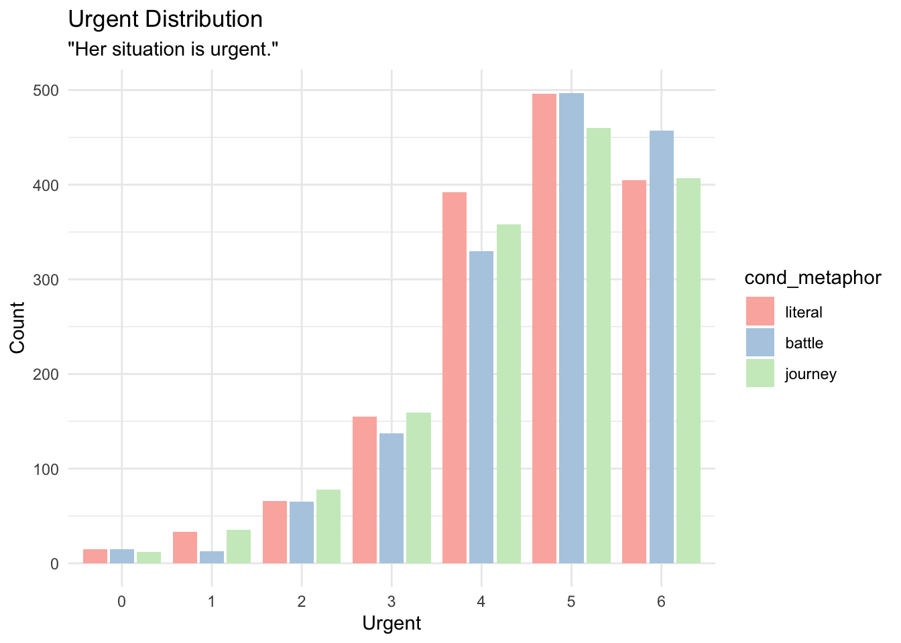
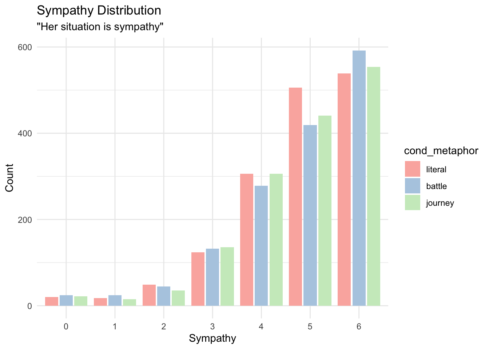

4 Sympathy and Urgency
Summary statistics of sympathy and urgency
summary(trials$sympathy, digits = 2)## Min. 1st Qu. Median Mean 3rd Qu. Max.
## 0.0 4.0 5.0 4.8 6.0 6.0summary(trials$urgent, digits = 2)## Min. 1st Qu. Median Mean 3rd Qu. Max.
## 0.0 4.0 5.0 4.6 6.0 6.0Distribution of the followup questions
ggplot(trials) + itheme +
geom_bar(aes(urgent, group=1, y=..prop..)) +
scale_x_discrete(limits = seq(0,6)) +
labs(x = "Urgent", y = "Proportion", title = "Urgent Distribution", subtitle = "\"Her situation is urgent.\"")
ggplot(trials) + itheme +
geom_bar(aes(sympathy, group=1, y=..prop..)) +
scale_x_discrete(limits = seq(0,6)) +
labs(x = "Sympathy", y = "Proportion", title = "Sympathy Distribution", subtitle = "\"Her situation is one I sympathize with.\"")
ggplot(trials) + itheme +
geom_bar(aes(as.factor(urgent), fill = cond_metaphor), width = 0.9, position = position_dodge2(preserve = "single")) +
labs(x = "Urgent", y = "Count", title = "Urgent Distribution", subtitle = "\"Her situation is urgent.\"") +
scale_fill_brewer(palette = "Pastel1")
ggplot(trials) + itheme +
geom_bar(aes(as.factor(sympathy), fill = cond_metaphor), width = 0.9, position = position_dodge2(preserve = "single")) +
labs(x = "Sympathy", y = "Count", title = "Sympathy Distribution", subtitle = "\"Her situation is sympathy\"") +
scale_fill_brewer(palette = "Pastel1")
4.1 Sympathy
Does the metaphorical condition have a relationship to participant’s rating of perceived sympathy?
H: Higher sympathy leads to higher donations
model_sympathy_base = lm(update(base.formula, donation ~ .), data = trials)
model_sympathy_full = lm(update(base.formula, donation ~ . + sympathy), data = trials)
compare_lm(model_sympathy_base, model_sympathy_full)## Analysis of Variance Table
##
## Model 1: donation ~ cond_sex + self_cancer + ff_cancer + gender + education +
## socioeconomic + past_donations.z + age.z
## Model 2: donation ~ cond_sex + self_cancer + ff_cancer + gender + education +
## socioeconomic + past_donations.z + age.z + sympathy
## Res.Df RSS Df Sum of Sq Pr(>Chi)
## 1 4560 1172938
## 2 4559 1090313 1 82625 < 2.2e-16 ***
## ---
## Signif. codes: 0 '***' 0.001 '**' 0.01 '*' 0.05 '.' 0.1 ' ' 1
## [1] Chisq Stat: 334.919## Warning in if (cls == c("lm") | cls == c("glm", "lm")) {: the condition has
## length > 1 and only the first element will be used## MODEL INFO:
## Observations: 4585
## Dependent Variable: donation
## Type: OLS linear regression
##
## MODEL FIT:
## F(25,4559) = 18.522, p = 0.000
## R² = 0.092
## Adj. R² = 0.087
##
## Standard errors: OLS
## ------------------------------------------------------------------------
## Est. 2.5% 97.5% t val. p
## --------------------------- -------- --------- -------- -------- -------
## (Intercept) 8.810 2.564 15.056 2.765 0.006
## cond_sexfemale -0.300 -1.199 0.598 -0.656 0.512
## self_cancerY 4.763 2.609 6.917 4.335 0.000
## self_cancerOO 5.901 1.190 10.611 2.456 0.014
## ff_cancerY 0.824 -0.150 1.798 1.659 0.097
## ff_cancerOO 3.566 0.145 6.987 2.044 0.041
## genderF 0.508 -0.410 1.425 1.085 0.278
## genderNB 2.277 -3.844 8.398 0.729 0.466
## genderOO -6.211 -14.804 2.382 -1.417 0.157
## educationHS -3.757 -9.802 2.288 -1.219 0.223
## educationA -3.595 -9.724 2.535 -1.150 0.250
## educationB -2.075 -8.104 3.955 -0.675 0.500
## educationM -0.654 -6.780 5.472 -0.209 0.834
## educationP -2.040 -8.653 4.573 -0.605 0.545
## educationD -2.772 -9.601 4.057 -0.796 0.426
## educationOO -3.422 -12.953 6.108 -0.704 0.481
## socioeconomic10-25k -0.635 -2.331 1.062 -0.733 0.463
## socioeconomic25-50k -0.094 -1.633 1.445 -0.120 0.905
## socioeconomic50-75k 0.814 -0.822 2.450 0.975 0.329
## socioeconomic75-100k 1.715 -0.166 3.597 1.787 0.074
## socioeconomic100-150k 1.212 -0.954 3.378 1.097 0.273
## socioeconomic>150k 2.141 -0.907 5.188 1.377 0.169
## socioeconomicOO -2.001 -5.067 1.065 -1.280 0.201
## past_donations.z 1.111 0.212 2.009 2.424 0.015
## age.z -0.017 -0.935 0.900 -0.037 0.970
## sympathy 3.327 2.976 3.677 18.587 0.000
## ------------------------------------------------------------------------4.2 Urgency
# b = trials %>%
# ggplot(aes(factor(urgent+1), donation)) + ptheme +
# # geom_boxplot()
# stat_summary(geom = "errorbar", fun.data = mean_se, width = 0.2) +
# stat_summary(geom = "point", fun.data = mean_se, shape = 5) +
# geom_jitter(alpha = 0.02, width = 0.25, shape = 16) +
# scale_x_discrete(labels = c("1" = "1\nNot urgent", "7" = "7")) +
# scale_y_continuous(labels = scales::dollar) +
# labs(y = "Donation", x = "Urgency", title = "Urgency on Donation") +
# coord_cartesian(ylim = c(5, 36))
#
# bDoes the metaphorical condition have a relationship to participant’s rating of perceived urgency?
H: High urgency leads to higher donations
model_urgent_base = lm(update(base.formula, donation ~ .), data = trials)
model_urgent_full = lm(update(base.formula, donation ~ . + urgent), data = trials)
compare_lm(model_urgent_base, model_urgent_full)## Analysis of Variance Table
##
## Model 1: donation ~ cond_sex + self_cancer + ff_cancer + gender + education +
## socioeconomic + past_donations.z + age.z
## Model 2: donation ~ cond_sex + self_cancer + ff_cancer + gender + education +
## socioeconomic + past_donations.z + age.z + urgent
## Res.Df RSS Df Sum of Sq Pr(>Chi)
## 1 4560 1172938
## 2 4559 1093712 1 79226 < 2.2e-16 ***
## ---
## Signif. codes: 0 '***' 0.001 '**' 0.01 '*' 0.05 '.' 0.1 ' ' 1
## [1] Chisq Stat: 320.647## Warning in if (cls == c("lm") | cls == c("glm", "lm")) {: the condition has
## length > 1 and only the first element will be used## MODEL INFO:
## Observations: 4585
## Dependent Variable: donation
## Type: OLS linear regression
##
## MODEL FIT:
## F(25,4559) = 17.898, p = 0.000
## R² = 0.089
## Adj. R² = 0.084
##
## Standard errors: OLS
## ------------------------------------------------------------------------
## Est. 2.5% 97.5% t val. p
## --------------------------- -------- --------- -------- -------- -------
## (Intercept) 8.924 2.663 15.185 2.794 0.005
## cond_sexfemale -0.307 -1.206 0.593 -0.668 0.504
## self_cancerY 4.988 2.831 7.145 4.533 0.000
## self_cancerOO 5.205 0.488 9.922 2.163 0.031
## ff_cancerY 1.617 0.648 2.586 3.270 0.001
## ff_cancerOO 4.323 0.896 7.749 2.473 0.013
## genderF 1.094 0.176 2.011 2.337 0.019
## genderNB 2.739 -3.392 8.869 0.876 0.381
## genderOO -5.741 -14.347 2.866 -1.308 0.191
## educationHS -3.973 -10.027 2.082 -1.286 0.198
## educationA -3.601 -9.740 2.538 -1.150 0.250
## educationB -1.930 -7.968 4.109 -0.626 0.531
## educationM -0.162 -6.297 5.973 -0.052 0.959
## educationP -1.065 -7.688 5.558 -0.315 0.753
## educationD -2.264 -9.104 4.575 -0.649 0.516
## educationOO -3.665 -13.210 5.880 -0.753 0.452
## socioeconomic10-25k -0.834 -2.533 0.864 -0.963 0.336
## socioeconomic25-50k -0.094 -1.635 1.448 -0.119 0.905
## socioeconomic50-75k 0.788 -0.850 2.426 0.943 0.346
## socioeconomic75-100k 2.012 0.128 3.897 2.094 0.036
## socioeconomic100-150k 1.322 -0.848 3.492 1.194 0.232
## socioeconomic>150k 2.227 -0.825 5.279 1.431 0.153
## socioeconomicOO -1.463 -4.535 1.608 -0.934 0.350
## past_donations.z 1.065 0.165 1.964 2.320 0.020
## age.z 0.167 -0.750 1.085 0.358 0.721
## urgent 3.244 2.894 3.594 18.173 0.000
## ------------------------------------------------------------------------4.3 Metaphor on Sympathy
# a = trials %>%
# # mutate(cond_metaphor = factor(cond_metaphor, levels = c("literal", "journey", "battle"))) %>%
# ggplot(aes(cond_metaphor, urgent+1)) + ptheme +
# stat_summary(geom = "errorbar", fun.data = mean_se, width = 0.1, position = position_dodge(width = 0.3)) +
# stat_summary(geom = "point", fun.data = mean_se, shape = 5, position = position_dodge(width = 0.3)) +
# scale_x_discrete(labels = c("literal" = "Literal", "battle" = "Battle", "journey" = "Journey")) +
# labs(title = "Metaphor Condition on Urgency", x = "Metaphor", y = "Urgency (1 - 7)") +
# # scale_color_brewer(palette = "Set1", name = "Gender") +
# coord_cartesian(ylim = c(5.35, 6.2)) +
# geom_signif(comparisons = list(c("journey", "battle"), c("literal", "battle")),
# y_position = c(5.8, 5.95),
# tip_length = 0.005,
# textsize = 2.75,
# annotations = c("list({\U03C7^2}(1) == 10.4, ~~ p < 0.01)",
# "list({\U03C7^2}(1) == 7.8, ~~ p < 0.01)"),
# parse = T)
#
# g = grid.arrange(a, b, nrow = 1)
# ggsave("urgency.png", g, width = pwidth, height = pheight, bg = "transparent")The metaphor condition predicts how much sympathy participants feel
model_sympathy_base = lm(update(base.formula, sympathy ~ .), data = trials)
model_sympathy_full = lm(update(base.formula, sympathy ~ . + cond_metaphor), data = trials)
compare_lm(model_sympathy_base, model_sympathy_full)## Analysis of Variance Table
##
## Model 1: sympathy ~ cond_sex + self_cancer + ff_cancer + gender + education +
## socioeconomic + past_donations.z + age.z
## Model 2: sympathy ~ cond_sex + self_cancer + ff_cancer + gender + education +
## socioeconomic + past_donations.z + age.z + cond_metaphor
## Res.Df RSS Df Sum of Sq Pr(>Chi)
## 1 4560 7466.7
## 2 4558 7466.4 2 0.32801 0.9047
## [1] Chisq Stat: 0.2014.4 Metaphor on Urgency
The metaphor condition predicts how much urgency participants feel
model_urgent_base = lm(update(base.formula, urgent ~ .), data = filter(trials, cond_metaphor != "literal"))
model_urgent_full = lm(update(base.formula, urgent ~ . + cond_metaphor), data = filter(trials, cond_metaphor != "literal"))
compare_lm(model_urgent_base, model_urgent_full)## Analysis of Variance Table
##
## Model 1: urgent ~ cond_sex + self_cancer + ff_cancer + gender + education +
## socioeconomic + past_donations.z + age.z
## Model 2: urgent ~ cond_sex + self_cancer + ff_cancer + gender + education +
## socioeconomic + past_donations.z + age.z + cond_metaphor
## Res.Df RSS Df Sum of Sq Pr(>Chi)
## 1 2998 4940.5
## 2 2997 4923.2 1 17.272 0.001184 **
## ---
## Signif. codes: 0 '***' 0.001 '**' 0.01 '*' 0.05 '.' 0.1 ' ' 1
## [1] Chisq Stat: 10.587## Warning in if (cls == c("lm") | cls == c("glm", "lm")) {: the condition has
## length > 1 and only the first element will be used## MODEL INFO:
## Observations: 3023
## Dependent Variable: urgent
## Type: OLS linear regression
##
## MODEL FIT:
## F(25,2997) = 2.153, p = 0.001
## R² = 0.018
## Adj. R² = 0.009
##
## Standard errors: OLS
## -----------------------------------------------------------------------
## Est. 2.5% 97.5% t val. p
## --------------------------- -------- -------- -------- -------- -------
## (Intercept) 4.674 4.052 5.296 14.726 0.000
## cond_sexfemale -0.021 -0.113 0.071 -0.455 0.649
## self_cancerY -0.018 -0.234 0.199 -0.161 0.872
## self_cancerOO -0.229 -0.716 0.258 -0.921 0.357
## ff_cancerY 0.097 -0.003 0.197 1.894 0.058
## ff_cancerOO -0.065 -0.397 0.267 -0.386 0.700
## genderF -0.022 -0.116 0.072 -0.451 0.652
## genderNB 0.013 -0.643 0.668 0.038 0.970
## genderOO 0.438 -0.378 1.253 1.053 0.293
## educationHS 0.050 -0.570 0.669 0.157 0.875
## educationA -0.032 -0.660 0.596 -0.100 0.920
## educationB -0.076 -0.693 0.542 -0.240 0.810
## educationM -0.146 -0.774 0.482 -0.456 0.648
## educationP -0.245 -0.927 0.437 -0.704 0.481
## educationD -0.114 -0.812 0.583 -0.322 0.748
## educationOO -0.143 -1.064 0.778 -0.304 0.761
## socioeconomic10-25k -0.014 -0.187 0.159 -0.159 0.874
## socioeconomic25-50k 0.116 -0.043 0.274 1.428 0.153
## socioeconomic50-75k 0.124 -0.045 0.292 1.438 0.150
## socioeconomic75-100k -0.019 -0.212 0.175 -0.189 0.850
## socioeconomic100-150k -0.143 -0.367 0.081 -1.250 0.211
## socioeconomic>150k -0.078 -0.382 0.227 -0.499 0.618
## socioeconomicOO -0.117 -0.421 0.187 -0.756 0.450
## past_donations.z 0.027 -0.059 0.113 0.612 0.541
## age.z 0.268 0.107 0.429 3.263 0.001
## cond_metaphorjourney -0.152 -0.244 -0.060 -3.243 0.001
## -----------------------------------------------------------------------4.5 Cancer Experience on Sympathy
model_selfcancer_sympathy_base = lm(update(base.formula, sympathy ~ . - self_cancer), data = trials)
model_selfcancer_sympathy_full = lm(update(base.formula, sympathy ~ .), data = trials)
compare_lm(model_selfcancer_sympathy_base, model_selfcancer_sympathy_full)## Analysis of Variance Table
##
## Model 1: sympathy ~ cond_sex + ff_cancer + gender + education + socioeconomic +
## past_donations.z + age.z
## Model 2: sympathy ~ cond_sex + self_cancer + ff_cancer + gender + education +
## socioeconomic + past_donations.z + age.z
## Res.Df RSS Df Sum of Sq Pr(>Chi)
## 1 4562 7469.7
## 2 4560 7466.7 2 2.9599 0.405
## [1] Chisq Stat: 1.817model_ffcancer_sympathy_base = lm(update(base.formula, sympathy ~ . - ff_cancer), data = trials)
model_ffcancer_sympathy_full = lm(update(base.formula, sympathy ~ .), data = trials)
compare_lm(model_ffcancer_sympathy_base, model_ffcancer_sympathy_full)## Analysis of Variance Table
##
## Model 1: sympathy ~ cond_sex + self_cancer + gender + education + socioeconomic +
## past_donations.z + age.z
## Model 2: sympathy ~ cond_sex + self_cancer + ff_cancer + gender + education +
## socioeconomic + past_donations.z + age.z
## Res.Df RSS Df Sum of Sq Pr(>Chi)
## 1 4562 7565.5
## 2 4560 7466.7 2 98.769 7.977e-14 ***
## ---
## Signif. codes: 0 '***' 0.001 '**' 0.01 '*' 0.05 '.' 0.1 ' ' 1
## [1] Chisq Stat: 60.252## Warning in if (cls == c("lm") | cls == c("glm", "lm")) {: the condition has
## length > 1 and only the first element will be used## MODEL INFO:
## Observations: 4585
## Dependent Variable: sympathy
## Type: OLS linear regression
##
## MODEL FIT:
## F(24,4560) = 5.319, p = 0.000
## R² = 0.027
## Adj. R² = 0.022
##
## Standard errors: OLS
## ----------------------------------------------------------------------
## Est. 2.5% 97.5% t val. p
## --------------------------- -------- -------- ------- -------- -------
## (Intercept) 4.385 3.885 4.886 17.165 0.000
## cond_sexfemale -0.046 -0.120 0.028 -1.215 0.224
## self_cancerY -0.001 -0.179 0.177 -0.013 0.990
## self_cancerOO -0.267 -0.657 0.122 -1.344 0.179
## ff_cancerY 0.315 0.235 0.395 7.711 0.000
## ff_cancerOO 0.068 -0.215 0.351 0.473 0.636
## genderF 0.146 0.070 0.222 3.783 0.000
## genderNB 0.045 -0.462 0.551 0.174 0.862
## genderOO 0.154 -0.557 0.865 0.425 0.671
## educationHS 0.196 -0.304 0.696 0.768 0.443
## educationA 0.144 -0.363 0.652 0.559 0.577
## educationB 0.124 -0.375 0.622 0.485 0.627
## educationM 0.196 -0.310 0.703 0.760 0.447
## educationP 0.222 -0.325 0.770 0.797 0.425
## educationD 0.064 -0.501 0.629 0.222 0.824
## educationOO 0.079 -0.709 0.868 0.197 0.844
## socioeconomic10-25k -0.116 -0.256 0.025 -1.617 0.106
## socioeconomic25-50k 0.057 -0.071 0.184 0.873 0.383
## socioeconomic50-75k 0.083 -0.053 0.218 1.198 0.231
## socioeconomic75-100k 0.070 -0.086 0.225 0.879 0.380
## socioeconomic100-150k -0.059 -0.238 0.121 -0.642 0.521
## socioeconomic>150k -0.148 -0.400 0.104 -1.150 0.250
## socioeconomicOO -0.047 -0.300 0.207 -0.360 0.719
## past_donations.z -0.009 -0.083 0.065 -0.238 0.812
## age.z 0.129 0.053 0.205 3.337 0.001
## ----------------------------------------------------------------------4.6 Cancer Experience on Urgency
model_selfcancer_urgent_base = lm(update(base.formula, urgent ~ . - self_cancer), data = trials)
model_selfcancer_urgent_full = lm(update(base.formula, urgent ~ .), data = trials)
compare_lm(model_selfcancer_urgent_base, model_selfcancer_urgent_full)## Analysis of Variance Table
##
## Model 1: urgent ~ cond_sex + ff_cancer + gender + education + socioeconomic +
## past_donations.z + age.z
## Model 2: urgent ~ cond_sex + self_cancer + ff_cancer + gender + education +
## socioeconomic + past_donations.z + age.z
## Res.Df RSS Df Sum of Sq Pr(>Chi)
## 1 4562 7529.9
## 2 4560 7528.8 2 1.1205 0.7122
## [1] Chisq Stat: 0.682model_ffcancer_urgent_base = lm(update(base.formula, urgent ~ . - ff_cancer), data = trials)
model_ffcancer_urgent_full = lm(update(base.formula, urgent ~ .), data = trials)
compare_lm(model_ffcancer_urgent_base, model_ffcancer_urgent_full)## Analysis of Variance Table
##
## Model 1: urgent ~ cond_sex + self_cancer + gender + education + socioeconomic +
## past_donations.z + age.z
## Model 2: urgent ~ cond_sex + self_cancer + ff_cancer + gender + education +
## socioeconomic + past_donations.z + age.z
## Res.Df RSS Df Sum of Sq Pr(>Chi)
## 1 4562 7538.5
## 2 4560 7528.8 2 9.7228 0.05263 .
## ---
## Signif. codes: 0 '***' 0.001 '**' 0.01 '*' 0.05 '.' 0.1 ' ' 1
## [1] Chisq Stat: 5.917## Warning in if (cls == c("lm") | cls == c("glm", "lm")) {: the condition has
## length > 1 and only the first element will be used## MODEL INFO:
## Observations: 4585
## Dependent Variable: urgent
## Type: OLS linear regression
##
## MODEL FIT:
## F(24,4560) = 2.152, p = 0.001
## R² = 0.011
## Adj. R² = 0.006
##
## Standard errors: OLS
## ----------------------------------------------------------------------
## Est. 2.5% 97.5% t val. p
## --------------------------- -------- -------- ------- -------- -------
## (Intercept) 4.462 3.959 4.965 17.392 0.000
## cond_sexfemale -0.045 -0.120 0.029 -1.191 0.234
## self_cancerY -0.071 -0.250 0.108 -0.773 0.440
## self_cancerOO -0.060 -0.451 0.332 -0.299 0.765
## ff_cancerY 0.078 -0.002 0.159 1.913 0.056
## ff_cancerOO -0.163 -0.447 0.121 -1.125 0.260
## genderF -0.031 -0.107 0.045 -0.790 0.429
## genderNB -0.096 -0.605 0.412 -0.371 0.711
## genderOO 0.013 -0.701 0.727 0.036 0.971
## educationHS 0.267 -0.235 0.770 1.044 0.297
## educationA 0.150 -0.359 0.659 0.577 0.564
## educationB 0.082 -0.419 0.583 0.320 0.749
## educationM 0.050 -0.459 0.559 0.192 0.848
## educationP -0.072 -0.622 0.477 -0.259 0.796
## educationD -0.091 -0.658 0.477 -0.313 0.754
## educationOO 0.156 -0.636 0.948 0.386 0.699
## socioeconomic10-25k -0.057 -0.198 0.084 -0.794 0.427
## socioeconomic25-50k 0.058 -0.070 0.186 0.890 0.373
## socioeconomic50-75k 0.093 -0.043 0.229 1.339 0.181
## socioeconomic75-100k -0.020 -0.176 0.136 -0.251 0.802
## socioeconomic100-150k -0.094 -0.274 0.086 -1.025 0.305
## socioeconomic>150k -0.178 -0.431 0.075 -1.381 0.167
## socioeconomicOO -0.214 -0.468 0.041 -1.644 0.100
## past_donations.z 0.005 -0.070 0.080 0.128 0.898
## age.z 0.075 -0.001 0.151 1.941 0.052
## ----------------------------------------------------------------------